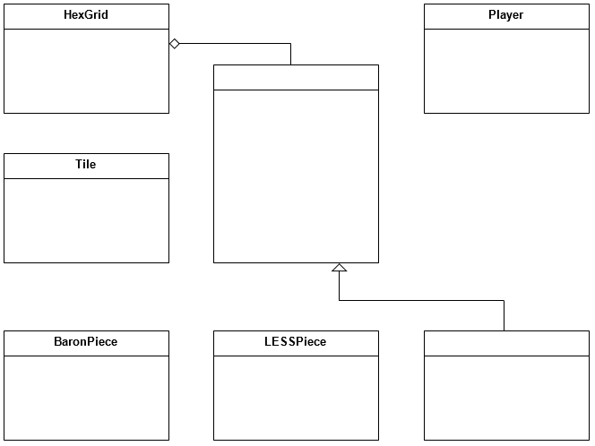
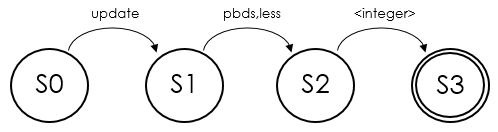

The following questions are provided in PDF here:
with answer lines |
without answer lines
An
Electronic Answer Document (EAD) is provided for all questions/tasks.
Save this file to an accessible location before you start.
This question refers to the PlayGame subroutine in the main program.
The subroutine does not currently print out the actual player names when displaying the status at the start of each turn; it just prints out ‘Player One’ and ‘Player Two’.
- How could this be corrected so that it would print out the names using the accessor method to the protected attribute Name from the Player class? [1]
- This is an example of using an accessor method. Why are accessor methods required in object-oriented programming? [1]
|
This question refers to the PlayGame subroutine in the main program.
In the subroutine, the variable Player1Turn is set to True to indicate that it is Player One’s turn. How does the game process Player Two’s turn? [2]
|
This question refers to the HasMethod method within the Piece class and the ExecuteCommandInTile method in the HexGrid class.
Explain how HasMethod is used in the ExecuteCommandInTile method. [2]
|
This question refers to the GetDistanceToTileT method in the Tile class.
GetDistanceToTileT is used to calculate the distance from the current tile to another tile.
- Explain how this calculation is performed. [3]
- Give a worked example of this calculation if the current tile has coordinates (2,-3,0) and the destination tile has coordinates (4,-4,0). All coordinates are given in (x,y,z) form.
|
The BaronPiece, LESSPiece and PBDSPiece classes all inherit from the Piece class.
- Explain what is meant by 'inheritance'. [1]
- Why isn’t there a 'SerfPiece' class? [1]
|
This question refers to the BaronPiece class and the Piece class.
The BaronPiece class overrides the public method CheckMoveIsValid from its parent.
- Explain what is meant by 'overriding'. [2]
- Explain why the method was overridden in this case. [2]
|
Big-O notation is used to measure the time complexity of algorithms.
- Examine the SetUpNeighbours method in the HexGrid class. State its time complexity. [1]
- Which other method is used as a measure of the complexity of algorithms? [1]
|
The skeleton program uses a Comma Separated Values (CSV) file as the data structure for a saved game.
Explain why a CSV file is suitable for cross-platform applications. [1]
|
Class diagrams can be represented using Unified Modeling Language (UML).
Add the missing class names and relationships to the diagram below: [4]

|
This question refers to the ExecuteUpgradeCommand method of the HexGrid class.
- What does a return value of -1 from this method mean? [1]
- What does a return value of 5 from this method mean? [1]
|
This question refers to the Dig method of the PBDSPiece class and the ExecuteCommandInTile method of the HexGrid class.
When a ‘dig’ command is issued by a player, it is possible that the tile will be changed from a peat bog to a field and that they will receive 5 fuel instead of the normal 1.
Explain how this eventuality is processed in the code with specific references to the variables used, function calls made and return values. [4]
|
This question refers to the DestroyPiecesAndCountVPs method of the HexGrid class and to the Piece class.
For a piece to be destroyed in the game, it needs to have two connections to immediate neighbours (i.e. pieces in two of the tiles that share a side with it).
- Explain how the DestroyPiecesAndCountVPs method uses polymorphism to access the protected attribute ConnectionsToDestroy of the Piece class. [2]
- Why is polymorphism not possible for private attributes? [1]
|
This question refers to the CheckUpgradeCommandFormat subroutine in the main program.
Currently the validation performed by this subroutine could be represented using the following FSM (note that the 0 or higher condition is not currently checked in the code but needs to be part of the answer).

Where is any valid (0 or higher) integer.
- Write down the regular expression that is the equivalent of this FSM. [3]
- Improve your regular expression so that it only accepts integers from 0 to 99. [1]
- What is the definition of a regular language? [1]
|
This question refers to the GetGridAsString method of the HexGrid class.
- State the identifier for a local variable used in this method. [1]
- What are the advantages of using local variables? [3]
- This method uses one private and two protected attributes. What is the difference between a private and a protected attribute? [2]
|
This question refers to the ExecuteSpawnCommand method of the HexGrid class.
Explain how the method works, including reference to how it meets the success condition for spawning a new Serf (it must be on an empty square adjacent to that player’s Baron). [6]
|